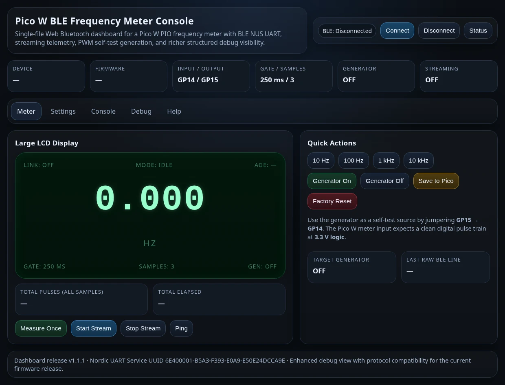

Flagship activity
The Singing Rule
Pluck a ruler and follow the motion from the original bench photo to live traces, measured ringdown, and a model you can try.
RANDALL YOUNG · EXPERIENCE BEFORE EQUATION
Experiments you can try, instruments you can build, and models you can test.
Flagship activity
Pluck a ruler and follow the motion from the original bench photo to live traces, measured ringdown, and a model you can try.

Premier CORE 10 activity
Follow a tea light from grams of fuel to joules in the water, compare heating rates, and account for where the rest of the energy went.

Current experiment
Run a marked 11-meter leg and see why a stopwatch and a wearable answer two different questions.

Instrument workshop
See original dashboards and build a wireless voltmeter, frequency meter, scale, ToF ruler, or thermometer.

Mathematics
Start with the cart that reverses direction. Learn why total distance and net change are not the same thing.

Curriculum
Use an ordinary cup of water to distinguish the heat it gains from the electricity an appliance uses.
Looking for work beyond this gallery? Browse the project inventory or search the public repositories.